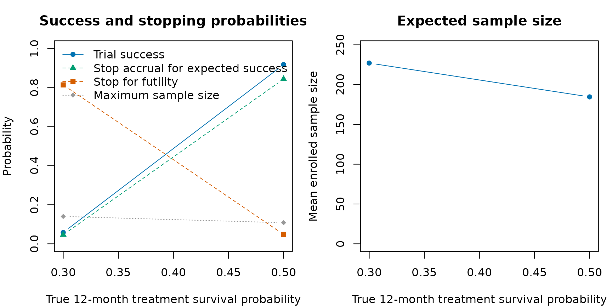
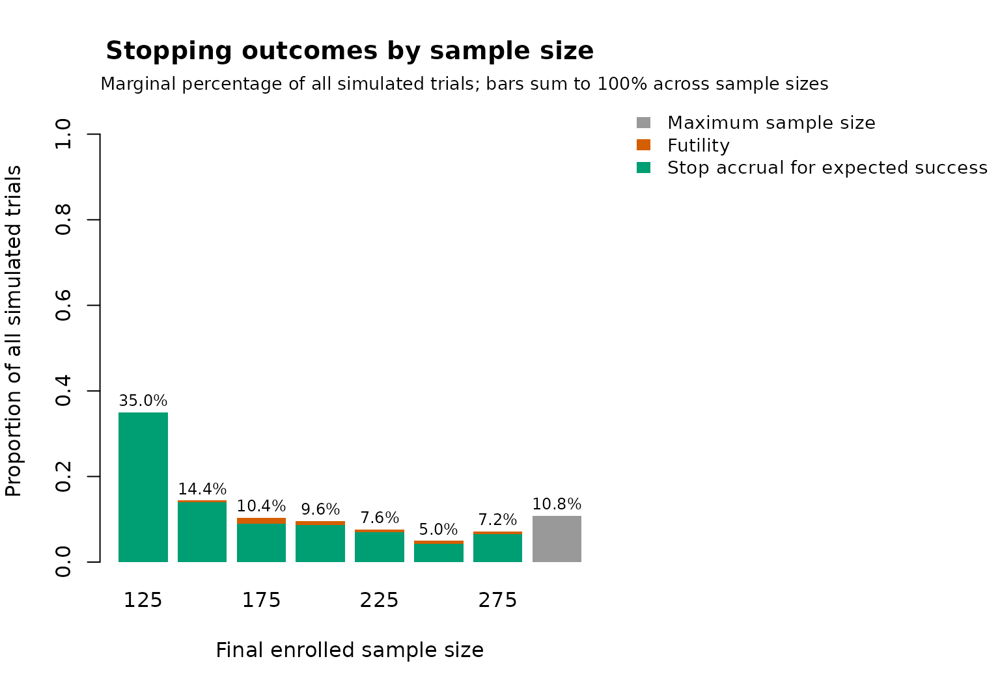
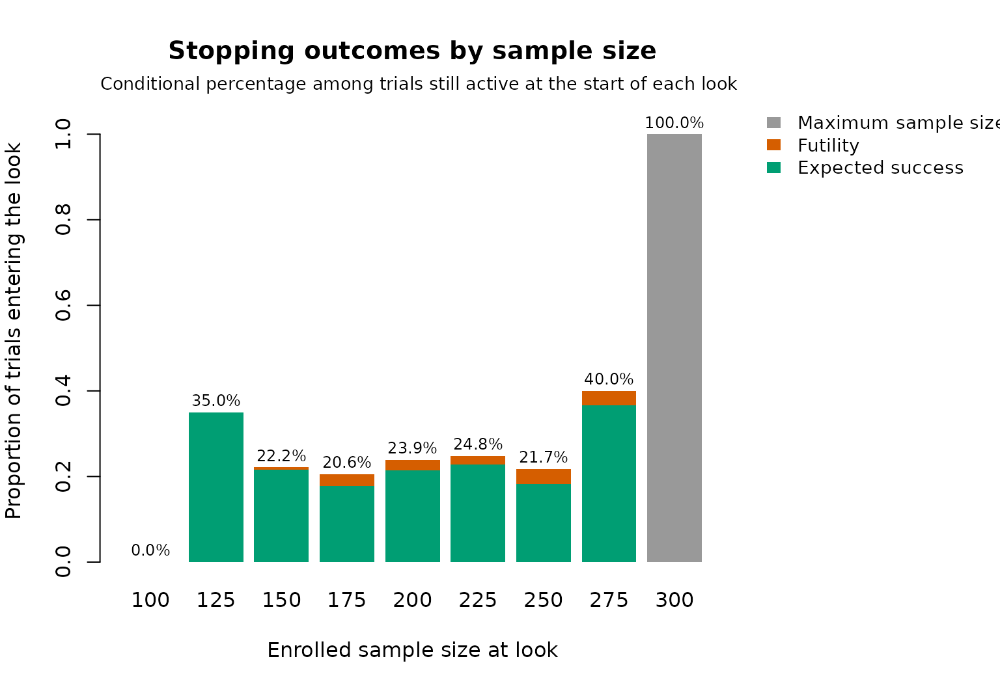
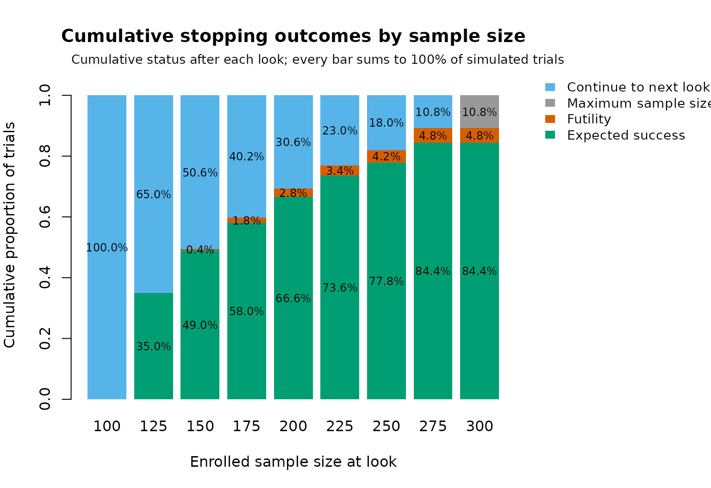

Broglio et al. (2014) presented an example from a hypothetical trial. We will use a similar setup for this example, and break up the pieces to make clear the argument choices for the package.
The setting is a two-arm randomized trial where patients are equally
randomized to either a control or a treatment arm. The primary endpoint
is overall survival (OS) measured from enrollment to death from any
cause or last follow-up. In goldilocks, enrollment time and
randomization time are treated as the same time point; in practice they
can differ, but that distinction is superfluous and therefore not
represented in the package simulator. The expected OS rate at 12-months
for the control arm is 30%. The minimum sample size is 100 and the
maximum sample size is 300. For simplicity, it is assumed that there is
no attrition. The maximum follow-up period for each subject is
12-months. This differs from the time-to-event example in Broglio et
al. (2014), which scheduled the primary analysis after accrual was
complete and all subjects had then completed 12 months of follow-up.
Thus, if accrual is stopped early for predicted success or the trial
continues accrual to the maximum sample size of 300 patients, the
primary analysis of OS will be conducted after each subject has
completed 12-months of follow-up.
From this information, we have:
- Equal randomization:
block = 2andrand_ratio = c(1, 1)(default parameters) - Primary endpoint is at 12-months:
end_of_study = 12 - 12-month event rate for control arm:
hazard_control = prop_to_haz(1 - 0.30, endtime = 12)(note that the input argument is the failure proportion, not the survival proportion) - No change points in hazard:
cutpoints = NULL(default parameter) - Maximum sample size:
N_total = 300 - No attrition:
prop_loss = 0
Sample size selection analyses are planned starting when 100 patients are enrolled and after every additional 25 patients are enrolled. Early stopping for futility is allowed starting with the 100 patient sample size selection analysis and F_n is 10%. Stopping accrual early for predicted success is only allowed starting with the 200 patient sample size selection analysis and S_n is 90%. It is expected that an average of 5 patients per month will be enrolled, with no change in speed for the duration of the trial.
Enrollment is stochastic even though the rate is constant. The
package fixes the first patient at calendar time zero and generates each
later inter-arrival gap from an exponential distribution with rate 5 per
month. Consequently, the expected time from the first to the 300th
enrollment is (300 - 1) / 5 = 59.8
months, but the realized completion time differs between simulated
trials. lambda_time = NULL indicates that there are no
internal enrollment-rate changes; zero is implicit and must not be
supplied.
For comparison, a ramp-up specification such as
lambda = c(2, 5) and lambda_time = 6 means 2
expected enrollments per month over [0,6) and 5 per month from month 6 onward.
Fractional changes such as lambda_time = 6.5 are also
simulated exactly. Enrollment-rate knots use the trial calendar measured
from first patient in, whereas hazard cutpoints use each
subject’s follow-up time measured from that subject’s enrollment. The
two schedules are independent and need not share their knots.
From this information, we have:
- Interim sample size looks:
interim_look = seq(100, 275, 25) - Futility probability thresholds:
Fn = rep(0.10, 8) - Predicted success probability thresholds:
Sn = c(1, rep(0.9, 7)) -
lambda = 5andlambda_time = NULL(default parameter)
Note that the first value of Sn is 1. This is because
the trial is not allowed to stop for predicted success at the first
interim analysis of n = 100. The
remaining elements of Sn are 0.9, corresponding to 90%.
The primary analysis is a two-sided log-rank test, with success declared at the \alpha = 0.05 level.
From this information, we have:
- Two-sided log-rank test used:
alternative = "two.sided"andmethod = "logrank" -
\alpha = 0.05 level used to declare
success:
prob_ha = 0.95
Note that prob_ha is set as 1
- 0.05. This allows us to interchange between tests, including
Bayesian tests (method = "bayes-surv"), which requires an
analogous posterior probability threshold. The parameter h0
is ignored when using a log-rank test, as it is not meaningful to have
success margins.
One-sided tests
The example above uses a two-sided test. When the trial is designed
to detect a benefit in one direction only – here, longer survival on the
treatment arm – a one-sided test is often more appropriate. The
cox and logrank methods support all three
alternatives via the alternative argument. For these
methods the direction is defined on the hazard scale:
-
alternative = "less"declares success when the treatment arm has a lower hazard (longer survival) than control. -
alternative = "greater"declares success when the treatment arm has a higher hazard.
For instance, to run the same design as a one-sided log-rank test at the 0.025 level, we would set:
out_power_1sided <- update(
out_power,
alternative = "less",
prob_ha = 0.975
)The frequentist binary risk-difference analysis
(method = "riskdiff") supports all three alternatives and
compares p_\textrm{treatment} -
p_\textrm{control} with h0 using a Wald test. The
Bayesian test (method = "bayes-surv") requires a one-sided
alternative ("less" or "greater"), and
"two.sided" raises an error. For the Bayesian test the
effect is measured on the cumulative-failure-probability scale, p_\textrm{treatment} - p_\textrm{control} at
end_of_study, compared against the margin h0
(default 0):
-
alternative = "less"declares success when the posterior probability that p_\textrm{treatment} - p_\textrm{control} < h_0 exceeds the thresholdprob_ha– i.e. the treatment arm has a failure probability lower than theh0margin relative to control. With the defaulth0 = 0, this means lower failure probability (longer survival) than control. -
alternative = "greater"declares success when the posterior probability that p_\textrm{treatment} - p_\textrm{control} > h_0 exceedsprob_ha.
In all methods, alternative = "less" therefore
corresponds to a beneficial treatment effect (longer survival) in this
example.
The operating characteristics will be determined using 500 simulated trials. At each interim analysis, we will use 100 imputations and assume independent weakly-informative \operatorname{Gamma}(0.1, 0.1) prior distributions for the treatment and control arm event time hazard rate parameters. As this is computationally expensive overall, we will exploit the option to parallelize the simulations over multiple cores.
- Number of simulated trials:
N_trials = 500 - Number of imputations from predictive distribution:
N_impute = 100 - Independent prior distribution for each hazard rate parameter:
prior = c(0.1, 0.1) - Parallel computation:
ncores = 8. The defaultbackend = "auto"uses forked workers on Unix-like platforms and PSOCK workers on Windows. - Reproducible simulation streams:
seed = 123
Similar to above, the parameter N_mcmc is not required
when using a log-rank test, meaning we do not need to enter a value for
this argument. Since we do not allow for attrition, the data at the
final analysis will be complete, and we can set
imputed_final = FALSE. If attrition occurred and
method = "cox" or method = "riskdiff" were
selected, imputed_final = TRUE would analyze each completed
dataset and pool the scalar estimates and variances using Rubin’s rules;
at least two imputations are required. Imputed final analyses are not
available for method = "logrank".
Initially, we want to determine the power to detect a significant treatment effect when the OS rate at 12-months for the treatment arm is 50%.
library(goldilocks)
#> Loading required package: survival
hc <- prop_to_haz(0.7, endtime = 12)
ht <- prop_to_haz(0.5, endtime = 12)
out_power <- sim_trials(
hazard_treatment = ht,
hazard_control = hc,
cutpoints = NULL,
N_total = 300,
lambda = 5,
lambda_time = NULL,
interim_look = seq(100, 275, 25),
end_of_study = 12,
prior = c(0.1, 0.1),
block = 2,
rand_ratio = c(1, 1),
prop_loss = 0,
alternative = "two.sided",
Fn = rep(0.10, 8),
Sn = c(1, rep(0.9, 7)),
prob_ha = 0.95,
N_impute = 100,
N_trials = 500,
method = "logrank",
ncores = 8,
seed = 123)On an Apple M2 Pro with 10 CPU cores, this workload took about 18
seconds with ncores = 8 in a local run. Runtime will vary
with hardware, the number of workers, and system load.
It is straightforward to calculate the type I error under this
design. The only change required is to set the
hazard_treatment argument to the same as the
hazard_control argument (i.e. the null case). We can make
use of the update() function to avoid having to type
everything else over again.
out_t1error <- update(out_power, hazard_treatment = hc, seed = 124)
knitr::kable(
summarise_sims(list(out_power$sims, out_t1error$sims)),
digits = 3,
caption = "Operating characteristics with a two-sided log-rank test at the 0.05 level. Scenario 1 is the alternative (treatment OS 50%); scenario 2 is the null (treatment OS 30%)."
)| scenario | power | stop_success | stop_futility | stop_max_N | mean_N | sd_N | stop_and_fail |
|---|---|---|---|---|---|---|---|
| 1 | 0.928 | 0.880 | 0.038 | 0.082 | 173.55 | 56.750 | 0.014 |
| 2 | 0.064 | 0.058 | 0.828 | 0.114 | 211.45 | 48.398 | 0.006 |
The type I error under this design (scenario 2, power
column) is slightly too large to be considered acceptable. This was to
be expected, since we kept the P-value
threshold as 0.05 despite having multiple interim looks. However, we
note that only simulated N_trials = 500 trials, meaning if
the type I error was truly 0.05, then values in the interval
(0.05 + c(-1, 1) * 1.96 * sqrt(0.05 * (1 - 0.05) / 500))
would be consistent with this.
In practice, we need to use a more stringent threshold in order to
control the overall type I error. This can be achieved by trial and
error. For example, if we use P <
0.04 (applied using the argument prob_ha = 0.96), we
find the operating characteristics are more acceptable.
out_power2 <- update(out_power, prob_ha = 0.96, return_trace = TRUE)
out_t1error2 <- update(
out_power2,
hazard_treatment = hc,
return_trace = FALSE,
seed = 125
)
oc_calibrated <- summarise_sims(list(
"target: treatment OS 50%" = out_power2$sims,
"null: treatment OS 30%" = out_t1error2$sims
))
knitr::kable(
oc_calibrated,
digits = 3,
caption = "Operating characteristics with the more stringent P < 0.04 threshold (`prob_ha = 0.96`)."
)| scenario | power | stop_success | stop_futility | stop_max_N | mean_N | sd_N | stop_and_fail |
|---|---|---|---|---|---|---|---|
| null: treatment OS 30% | 0.036 | 0.038 | 0.888 | 0.074 | 205.05 | 46.826 | 0.014 |
| target: treatment OS 50% | 0.914 | 0.866 | 0.046 | 0.088 | 175.70 | 57.825 | 0.016 |
In the cached 500-trial simulation, assuming the treatment arm has an OS rate of 50% at 12 months, 86.6% of trials stopped early for expected success, 4.6% stopped early for futility, and the mean sample size was 175.7. Overall power was 91.4%. When the treatment-arm OS rate equalled the control-arm rate, 88.8% of trials stopped early for futility. These Monte Carlo estimates have simulation error; larger calibration runs are appropriate for final design decisions.
The same results can be viewed graphically.
plot_sim_ocs() compares final success, stopping behavior,
and expected sample size across the treatment-effect scenarios. Because
the meaning and direction of an effect depends on the chosen analysis,
the effect scale is supplied explicitly; here it is the true 12-month
treatment survival probability.
oc_calibrated$true_treatment_survival <- c(0.50, 0.30)
plot_sim_ocs(
oc_calibrated,
effect = "true_treatment_survival",
xlab = "True 12-month treatment survival probability"
)
For a single scenario, plot_sim_stopping() can show four
complementary views. The default marginal view gives each outcome as a
percentage of all simulated trials. The conditional view uses only
trials still active when each look begins as its denominator, while the
cumulative view shows the status of all trials after every look and
includes those continuing to the next look. A flowchart view displays
counts moving from the total simulation set through futility, continued
enrollment, and early success at successive looks. Because
out_power2 retains simulation traces, the latter three
views include reached looks even when no trial stopped at that look.
Percentage labels use a compact size so values at adjacent looks remain
visually distinct.
plot_sim_stopping(out_power2)
plot_sim_stopping(out_power2, type = "conditional")
plot_sim_stopping(out_power2, type = "cumulative")
plot_sim_stopping(out_power2, type = "flowchart")The predictive-probability decision map requires traces from every simulated trial. These are opt-in because they increase the size of the simulation result:
plot_sim_decisions(out_power2)Each decision-map panel represents an interim look. The horizontal coordinate is the predictive probability of success after continuing to the maximum sample size; the vertical coordinate is the predictive probability if enrollment stops now. Shading and dashed lines show the continuation, futility, and expected-success regions.
Once we have identified a suitable design, we would typically re-run the simulations using a larger number of simulations and, perhaps, imputations.